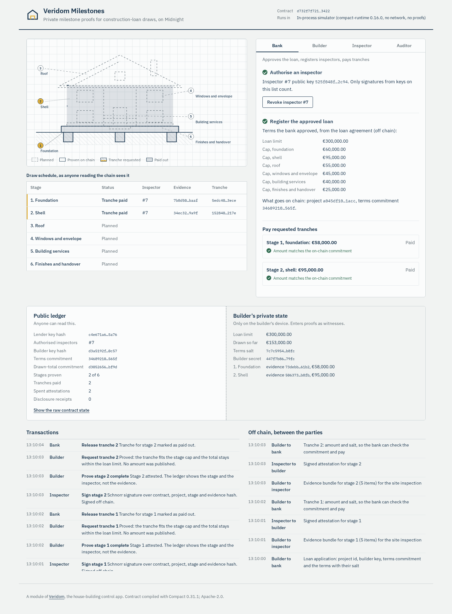

Construction-loan draws, proven without handing over the paperwork.
A Veridom module on Midnight
Midnight Buildathon, wave 3
The copies stay in the bank's systems and travel to surveyors. The builder keeps no say over them.
Three yes-or-no facts. None of them needs the documents themselves.
Everyone has to trust whoever runs it, and it still holds every document.
Verifiable, but every amount and every payment link would be readable by anyone, for ever.
The public ledger holds outcomes and commitments. Private state holds the data. Zero-knowledge proofs connect the two, and selective disclosure opens one fact when someone needs it.
| Public ledger | Private state (witnesses) |
|---|---|
| Lender and builder key hashes | Lender and builder secrets |
| Terms commitment | Loan limit, stage caps, salt |
| Drawn-total commitment | Running total drawn |
| Stage k: status, inspector id | Evidence bundle hash, signature |
| Tranche commitment | Tranche amount |
| Spent-signature nullifiers | |
| Salted consent receipts | Who received which fact |
// requestTranche, inside the proof
const terms = openTerms(pid, p);
const drawn = openDrawn(pid, p);
const amount = trancheAmount(pid, st);
assert(amount > 0, "...");
assert(amount <= capForStage(
terms.stageCaps, st), "...");
const newTotal = drawn + amount;
assert(newTotal <= terms.limit,
"Cumulative draw would exceed
the approved loan limit");
Compact 0.31.1, 8 provable circuits. Inspector signatures are verified inside the proof, caller identity comes from witness secrets, and write-back witnesses keep the private running total.

Banks and building societies that finance private home construction and pay it out stage by stage. Builders, through the Veridom app. Inspectors, with a signing tool.
The lender, per active construction loan: fewer documents to collect, store and protect, and a verifiable record of every release. Builders use it free as part of Veridom.
Start with the lenders Veridom already talks to, on private builds. The same proof fits other staged payouts: completion checks for insurers, stage-based grants and subsidies.
We are looking for a lender to pilot with, and for feedback from the Midnight team.
veridom.space
Open source under Apache-2.0